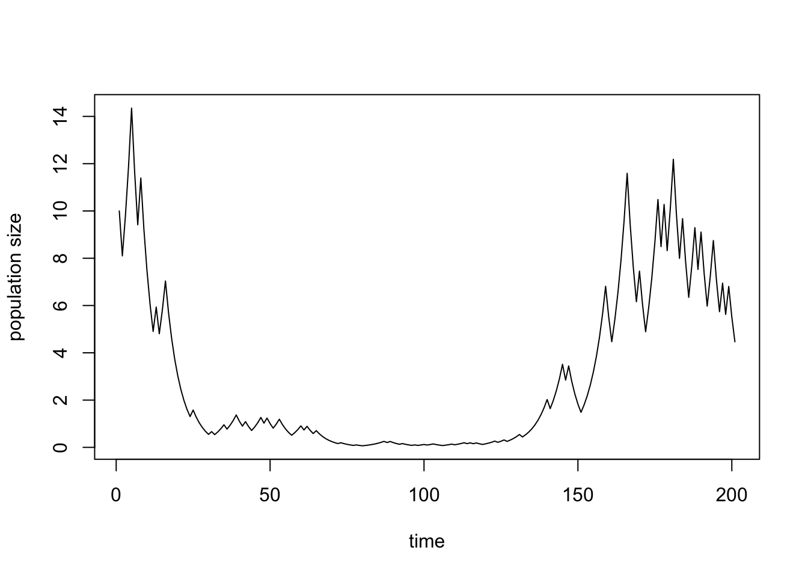
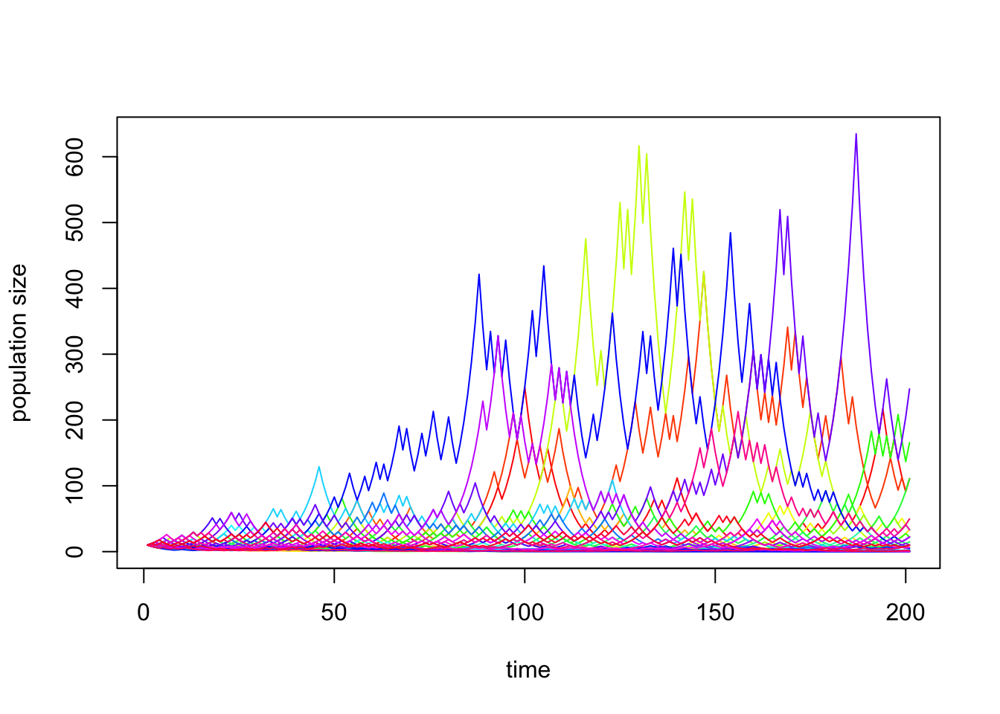
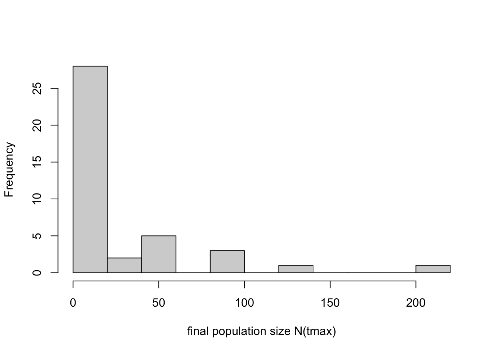
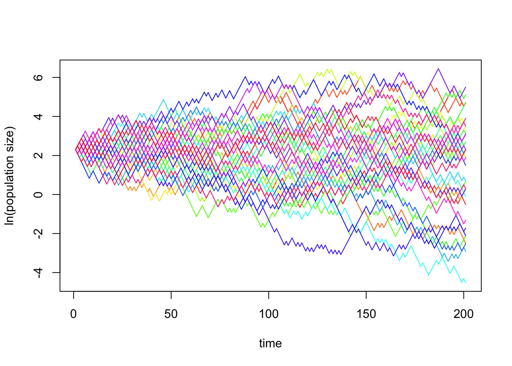
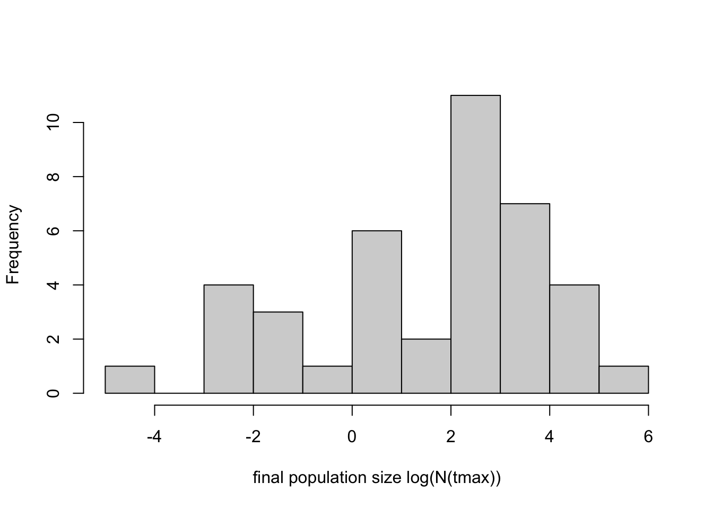
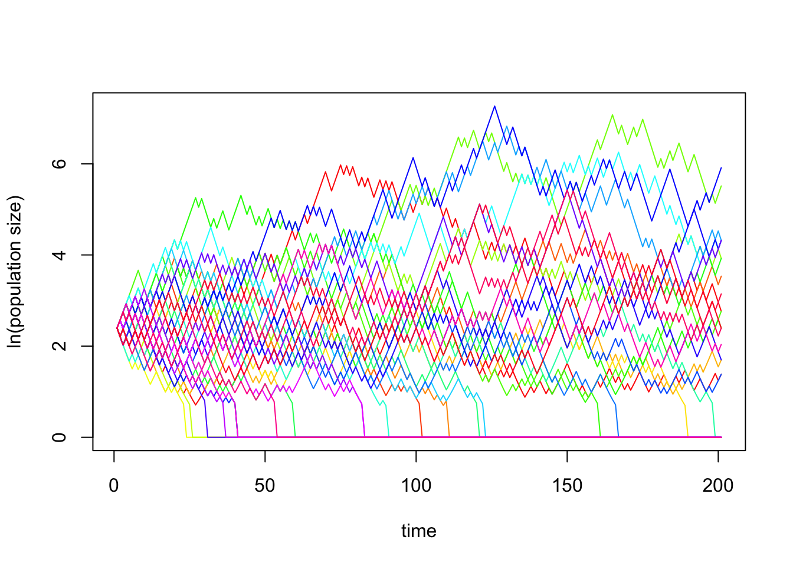
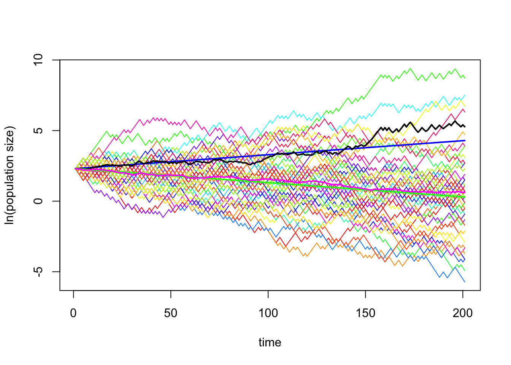

In the lecture, we derived
\[ N(t)=N(0)*(1+\beta-\delta)^t=N(0)*\lambda^t \] as a model for exponential growth in discrete time, where \(\lambda = 1 + \beta - \delta\). Importantly, the above equation assumes that the growth factor \(\lambda\) does not vary in time. In this exercise, we will relax this assumption. For example, climatic conditions vary among years and this might affect the average number of offspring, \(\beta\), and the probability to die, \(\delta\), of ALL individuals in a population. In short, \(\lambda\) will vary in time and we indicate this by adding \(t\) as an argument, \(\lambda(t)\).
In this exercise, we simulate environmental stochasticity in R. We do this for the simplest possible case, namely, that \(\lambda(t)\) can take one of two different values: \[
\lambda_1 = \bar \lambda + \epsilon \,\,\,\,\, \text{ good years} \\
\lambda_2 = \bar \lambda - \epsilon \,\,\,\,\, \text{bad years},
\] with \(0 < \epsilon < \bar \lambda\). For simplicity, let us furthermore assume that each environment occurs with equal probability. We can do this in R by using the function sample(x = possible_outcomes, size = tmax, replace = TRUE, prob = probabilities):
lambda.mean <- 1.01
deviation <- 0.2
lambda1 <- (lambda.mean + deviation)
lambda2 <- (lambda.mean - deviation)
possible.outcomes <- c(lambda1, lambda2)
probabilities <- c(0.5, 0.5)
N0 <- 10 # initial population size
tmax <- 200 # length of the time series
sample(x = possible.outcomes, size = tmax, replace = TRUE, prob = probabilities) # example of stochastic sequence of lambda-valuesIn the next step, we want to use the sequence of \(\lambda\)-values to project a population that consists at time t=0 of N(0) individuals t time steps into the future. Thus, we want to compute
\[ N(t)=\lambda(t-1)*\lambda(t-2)*\ldots*\lambda(2)*\lambda(1)*\lambda(0)*N(0). \]
In the following, we define a function that produces a stochastic time series.
environmental.stochasticity <- function(N0, tmax, possible.outcomes, probabilities) {
time.series <- c(N0) # creates a vector in which the time series will be stored and enters the starting value in the first position of that vector
for (t in 1:tmax) {# for loop that iterates the population dynamics tmax times
lambda <- sample(possible.outcomes, 1, probabilities, replace = TRUE) # new lambda value is chosen randomly
time.series[t+1] <- time.series[t]*lambda
}
time.series
}Next, we plot the resulting time series.
data <- environmental.stochasticity(N0, tmax, possible.outcomes, probabilities) # runs the function
plot(data, type="l", xlab="time", ylab="population size")
Alternatively, we can plot the time series on a log-scale. We can do this in two different ways. First, by adding the option log = "y" to the plot command. Second, by taking the logarithm of the data. Observe how the two option affect the scaling on the y-axis.
plot(data, type="l", log = "y", xlab="time", ylab="population size")
plot(log(data), type="l", xlab="time", ylab="ln(population size)")Each time this code is executed, you obtain a different random time series. A focus of this exercise is to investigate the variation more systematically. As a first step, let us look at many simulations simultaneously.
sim <- 40 # number of simulation runs
results <- matrix(nrow = tmax + 1, ncol = sim) # Creates an empty matrix with n+1 rows and as many columns as determined by the parameter "sim". We will store each time series in one column of this matrix.
for (i in 1:sim) {# executes the function sim times
results[, i] <- environmental.stochasticity(N0, tmax, possible.outcomes, probabilities) # produces a time series and stores it in the i-th column of the matrix results
}
# Let us combine all time series into a single plot.
cl <- rainbow(sim) # set number of colors equal to number of simulations
# next, we use the command "matplot", which plots all columns of a matrix as a separate line
matplot(results, type="l", lty=1, ylim=c(0, max(results)), col=cl, xlab="time", ylab="population size")
You probably obtained a figure in which you cannot distinguish the different simulations very well since many of them have similarly low values. To visualize this better, we can make a histogram of population size in the final generation.
hist(results[tmax, ], 10, main = "", xlab = "final population size N(tmax)") # histogram with 10 bars
This illustrates very clearly that the majority of simulations result in low population sizes, and only a few simulations result in relatively large populations. A useful method to see the differences between the simulations resulting in low population size more clearly is to plot the time series on a log-scale. For reasons that will become clear later, I here choose to take the logarithm of the data before plotting rather than using the option log = "y".
matplot(log(results), lty = 1, type = "l", ylim = c(min(log(results)), max(log(results))), col = cl, xlab = "time", ylab = "ln(population size)")
hist(log(results[tmax, ]), 10, main = "", xlab = "final population size log(N(tmax))")
The histogram shows that the final population sizes seem to be approximately normal distributed on the log-scale!
Note that in our current simulations, population sizes never become truly equal to zero, because in the recursion equation we always multiply a positive number with another positive number. However, in real life populations can go extinct. To incorporate this into our simulations, we can introduce an extinction threshold. If the population size drops below this threshold, then the population is extinct and cannot recover. A natural choice for such a threshold is 1. In the following code, we thus set population size to zero whenever N(t) drops below 1:
# new function that incorporates extinction as an extra condition in the while-loop
environmental.stochasticity.ext <- function(N0, tmax, possible.outcomes, probabilities) {
time.series <- c(N0)
for (t in 1:tmax) {
lambda <- sample(possible.outcomes, 1, replace = TRUE, probabilities)
time.series[t+1] <- ifelse(time.series[t] * lambda < 1, 0, time.series[t] * lambda) # sets population size to 0 in case N drops below 1
}
time.series
}
results <- matrix(nrow = tmax + 1, ncol = sim) # Creates an empty matrix with n+1 rows and as many columns as determined by the parameter "sim". We will store each time series in one column of this matrix.
for (i in 1:sim) {# executes the function with extinction threshold sim times
results[, i] <- environmental.stochasticity.ext(N0, tmax, possible.outcomes, probabilities) # produces a time series and stores it in the i-th column of the matrix results
}
matplot(log(results+1), lty = 1, type = "l", ylim = c(0, max(log(results))), col = cl, xlab = "time", ylab = "ln(population size)") # to show extinction more clearly, we add a 1 to the results (compare how it looks if you remove the 1)
In summary, we can make the following observations:
You have seen that as time proceeds, the different simulation runs increasingly differ from each, thus, the variance increases. To obtain an understanding of the role of environmental stochasticity, we can study the distribution of time series. In the lecture, we saw that the expected value of \(\bar N(t)\), that is, the mean over an infinite number of time series is given by \[ \bar N(t) = N(0) \bar\lambda^t. \] Thus the mean of the distribution is described by population growth in the average environment \(\bar \lambda\). Let us compare this analytical prediction to the average \(\bar N(t)\) over all time series \(N_i(t)\) in our simulations, which is given by
\[ \bar N(t) = \frac{N_1(t)+ \ldots + N_n(t)}{n} = \frac{\sum_{i=1}^n N_i(t)}{n}. \]
Let us add both these lines to our plots. First, we repeat the code that produces sim time series without an extinction threshold on the normal scale. In a second step we produce the same plot but on a log-scale.
The following chunk contains the code for both the deterministic curve based on \(\bar \lambda\) and the curve for the mean of our simulations. Adding the latter is easy. Since we store the time series in a matrix called results. Each column contains a different time series. To calculate the mean population size at a certain point in time we have to take the mean over all values within a row. This can be done with the command rowMeans.
sim <- 10
results <- matrix(nrow = tmax + 1, ncol = sim)
for (i in 1:sim) {
results[, i] <- environmental.stochasticity(N0, tmax, possible.outcomes, probabilities)
}
# Let us combine all time series into a single plot.
cl <- rainbow(sim)
matplot(results, lty = 1, type = "l", ylim = c(0, max(results)), col = cl, xlab = "time", ylab = "population size")
time.series.mean.env <- c(N0)
for (t in 1:tmax) {
time.series.mean.env[t+1] <- time.series.mean.env[t]*lambda.mean
}
# adds a line with the time series "time.series.mean.env" to the figure
lines(time.series.mean.env, type="l", lwd = 2, col="Blue")
row.means <- rowMeans(results) # calculates average trajectory
lines(row.means, type="l", lwd = 2, col="Black") # add average trajectoryThis plot is probably not very useful as many lines are crowded together at low values. So, let’s plot it at the log-scale.
matplot(log(results), lty = 1, type = "l", ylim = c(min(log(results)), max(log(results))), col = cl, xlab = "time", ylab = "ln(population size)")
lines(log(time.series.mean.env), type="l", lwd = 2, col="Blue")
lines(log(row.means), type="l", lwd = 2, col="Black")Depending on your specific simulation outcome, the black line showing the average trajectory might or might not be close to the blue line showing the dynamics in the average environment (why is the blue line a straight line in the last plot?), corresponding to the expected average. Increasing the number of simulations (increasing the value of sim) should result in a better match between the two lines. Try it!
Due to the fact that the distribution of \(N(t)\)-values is highly skewed, with a few simulations resulting in high population size and many resulting in low population size, the average is not very informative about the fate of a “typical” simulation. Another way of saying this is that the median of \(N(t)\) is lower that the mean of \(N(t)\).
In class, we derived that the mean of the distribution of \(X(t) = \log (N(t))\) corresponds to the median of the distribution of \(N(t)\). Thus, looking at the mean of \(X(t)\) should give us a better idea the fate of most simulations.
The expectation of the mean \(\bar X(t)\) is given by \[ \bar X(t) = X(0) + t \bar r , \]
where \(\bar r\) is the mean over the distribution of \(\log(\lambda)\)-values,
\[ \bar r = \frac{1}{t} \sum_{i = 0}^{t - 1} \ln\left(\lambda(i)\right) = \frac{1}{t} \ln \left(\prod\lambda(i) \right) = \ln\left(\left(\prod\lambda(i)\right)^{\frac{1}{t}}\right) = \ln\left(\lambda_{\mathrm G}\right). \]
In words, the arithmetic mean of \(r\) is equal to the logarithm of the geometric mean of \(\lambda\)! For our specific case with just two environments occurring at equal frequencies, we obtain \[\begin{align} \bar r = & \frac{1}{2}\left(\ln(\lambda_1) + \ln(\lambda_2)\right) = \frac{1}{2}\left(\ln(\bar\lambda - \epsilon) + \ln(\bar\lambda + \epsilon)\right)\\ = & \frac{1}{2}\left(\ln\left((\bar\lambda - \epsilon) (\bar\lambda + \epsilon)\right)\right) = \frac{1}{2}\left(\ln(\bar\lambda^2 - \epsilon^2 )\right)\\ = & \ln \bar\lambda + \frac{1}{2} \ln \left(1 - \frac{\epsilon^2}{\bar\lambda^2}\right). \end{align}\]
Hence, \[ \lambda_{\mathrm G} = \left(\bar\lambda^2 - \epsilon^2 \right)^\frac{1}{2}. \]
Let us add both the trajectory based on \(\bar r\) and the mean of \(X(t) = \log(N(t))\) based on our simulations to the log-scale plot.
# function computing a time series given that the population changes by the geometric mean lambda value
lambda.geo <- (lambda.mean^2-deviation^2)^(1/2) # calculates the geometric mean lambda value according to the above formula
time.series.geo <- c(N0)
for (t in 1:tmax) {
time.series.geo[t+1] <- time.series.geo[t]*lambda.geo
}
# adds a line with the time series "time.series.geo" to the figure
lines(log(time.series.geo), type="l", lwd = 2, col="Green")
# adds a line with the mean of ln(N(t)) to the figure
lines(rowMeans(log(results)), type="l", lwd = 2, col="Magenta")
Let us make a couple of observations about this last plot, which is based on sim=50.
The major conclusion from this exercise is that environmental stochasticity reduces population growth compared to population growth in the “average” environment given by \(\bar \lambda\)! In fact, this decrease becomes more prominent with larger environmental fluctuations (in our case, larger values of \(\epsilon\)). The explanation is ultimately simple: population growth is more affected by bad years than by good years!
You have seen that for the chosen set of parameters \(\bar \lambda\) and \(\epsilon\) a certain proportion of simulation with extinction threshold runs results in extinction. How does the probability of extinction depend on parameters? Let us explore this question by changing the value of \(\epsilon\). For this part, we use the function with the extinction threshold and plot the time series on a log-scale.
From our graphs, one can determine the number of simulation runs in which the population goes extinct, simply by counting the number of simulations that hit zero.